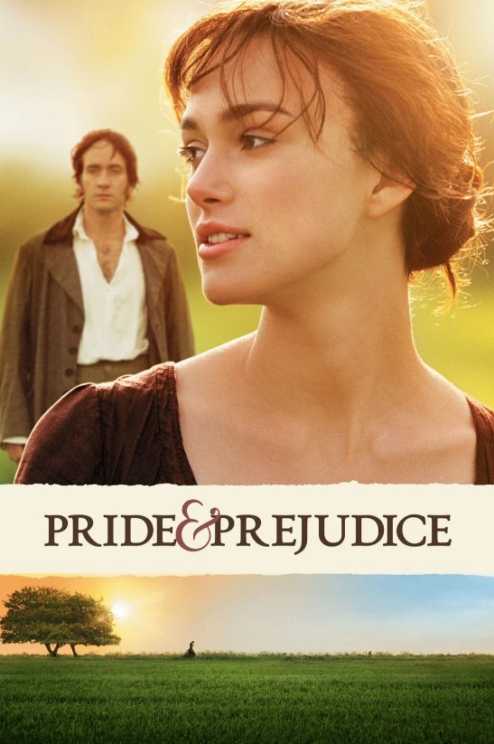

Spider-Man: Across the Spider-Verse

This is my number one favorite movie. I went to see it 21 times in theaters, over the span of 17 months, anytime I found an opportunity to when theaters would show it again every so often. The animation in this movie is absolutely phenomenal, the music is so incredible, the characters are all great, every bit of design in this movie is just top tier in my opinion. I also have a slight (okay maybe not so slight) obsession with Miguel O'Hara, the movie antagonist. It's just such an awesome movie, the animation truly is unreal and I love taking it all in, especially on a big screen where I can truly see and appreciate every little detail. I love listening to the soundtrack on its own too.
Pride and Prejudice
This is one of my top favorites because this is the original enemies-to-lovers romance story and it is fantastic, I think the movie is just as good as the 1813 Jane Austen novel in its own way. The characters are great and Mr. Darcy is the ideal man, unlike all the annoying or toxic lead men in many other romance movies. The plot is sweet, the music is wonderful, and the cinematography is so great as well. One time I watched this movie eight nights in a row. I think the mood and aesthetic of it is great, it makes me very happy.
Lord of the Rings

Where do I even start.. the Lord of the Rings movies are just the most phenomenal movies ever and it is all thanks to J.R.R. Tolkien for being the absolute god of worldbuilding and creating such a fantastic story with the coolest settings and characters and plotlines. I don't even know how they managed to bring such a story to life on screen the way they did and do it justice with these movies. The cinematography is just unreal, the music is absolutely legendary, and the practical effects they did are just so so cool. Across the Spider-Verse may be my current top favorite, but the three Lord of the Rings movies are just objectively the best movies and they'll be my long term favorites forever. I also have a replica of the sword Anduril and it is the coolest. I could go on and on about this trilogy, it's just so top tier and I don't think we'll ever get anything remotely like it again.
Titanic
Honestly I think this movie really won me over with the music and cinematography, I feel like the soundtrack is really iconic and the way the movie was filmed was just so beautiful and I really appreciate that about it. I think the plot is also very sweet, it might not be my absolute favorite and has some flaws but I still think it's very enjoyable to watch and a beautiful story either way.
Song of the Sea
This movie is just some of the prettiest 2D animation that I've seen and I think it's so captivating because of that, I love taking in all the details of it and appreciating everything. The music and story is also very nice and I feel like this movie is just one of the most perfect movies you could watch on a cold rainy day while eating soup or drinking tea. It's just got such cozy pleasant vibes to it.
Howl's Moving Castle
This movie has such a fun and whimsical energy (while also dipping into some more serious topics) and it's really fun to watch. The characters are great and the plot is interesting, and I love the animation. I think as with most Studio Ghibli movies that it's just a beautiful movie with a great message. It serves as a great comfort movie for sure.
Tangled
This is definitely one of my favorite Disney movies because of how magical it is. The music is so wonderful and fitting for the movie, the story is cool, the characters are great, and it's just a really fun watch. It has some very pretty scenes and great animation, and it's a very warm pleasant sort of movie that's always enjoyable to rewatch.
The Ballad of Songbirds and Snakes
The music in this movie is easily one of the main things that made me love it, I found it so cool how the songs in it had little snippets from the music of the original Hunger Games movies woven into them and transformed into something new. The cinematography was really cool too and I liked how the music enhanced the impact of that. This is also one of the only prequels ever that I actually was a fan of, most prequels to things end up disappointing me but this one didn't and I loved it. I really enjoyed the exploration of President Snow as a character and villain.
Harry Potter and the Half-Blood Prince
I may have many problems with the Harry Potter series and think that there are a ton of flaws and bad plot points throughout the whole story, but I still enjoy the series to a degree and I think this was the best movie out of all of them. I thought the cinematography and color grading throughout this movie was super good and really captured the more serious and sometimes gloomy energy that the story had. The music was also great as always with the Harry Potter movies.
Pirates of the Caribbean: The Curse of the Black Pearl
This is such a fun movie and the three leads in it all play their parts so well. The music is so iconic and amazing, and I think the costume and set design was also super cool and done really well. The cinematography and how they filmed a lot of the scenes was great also. I think this movie just has a really fun enjoyable pirate storyline, and I like the overall aesthetic of it.
How to Train Your Dragon
The soundtrack for this movie is one of the best ever, it fills the movie with so much magic and makes it amazing to watch every time, The characters are fun, the animation is really good, and the story is cool with a nice message. The music really just ties everything together so wonderfully though and it's one of my favorite parts of this movie for sure.
Twilight
Twilight is an absolute mess, it has a god awful plot and horrible characters that are just unbelievably dumb and weird, but it is one of the most amazing movies to watch alongside other people because it is just so cringe it ends up being super funny unintentionally. This movie has so many problems and it truly is such a joy to make fun of it with every watch. And it has some good music, I'll give it that. Plus the fact that it was filmed in the Pacific Northwest means there's some beautiful scenery here and there.